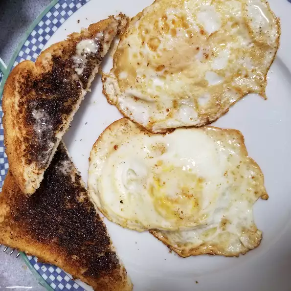

back to home
Egg Recipe

Ingredients
- ½ tablespoon unsalted butter
- 1 large egg
- salt and freshly ground black pepper to taste
Directions
- Melt butter in an 8-inch nonstick skillet or seasoned cast iron skillet over medium heat. Crack the egg into the skillet and cook undisturbed until the egg white is firm and set, but the yolk is still runny and intact, about 1 1/2 to 2 minutes.
- Gently flip the egg with a spatula being careful not to break the yolk. Cook for another 15 to 20 seconds or to your desired doneness, being sure that the yolk remains liquid.
- Transfer the egg to a plate, season with salt and pepper, and serve immediately.
Cook's Note
Feel free to substitute oil for the butter.
Nutrition Facts
Per Serving:
122 calories; protein 6.4g; carbohydrates 0.4g; fat 10.7g; cholesterol 201.3mg; sodium 70.8mg